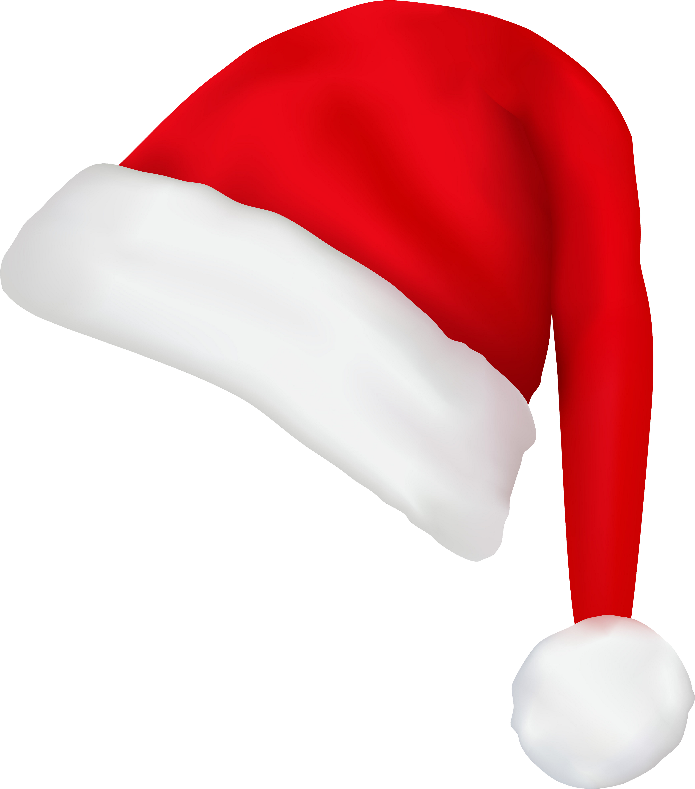
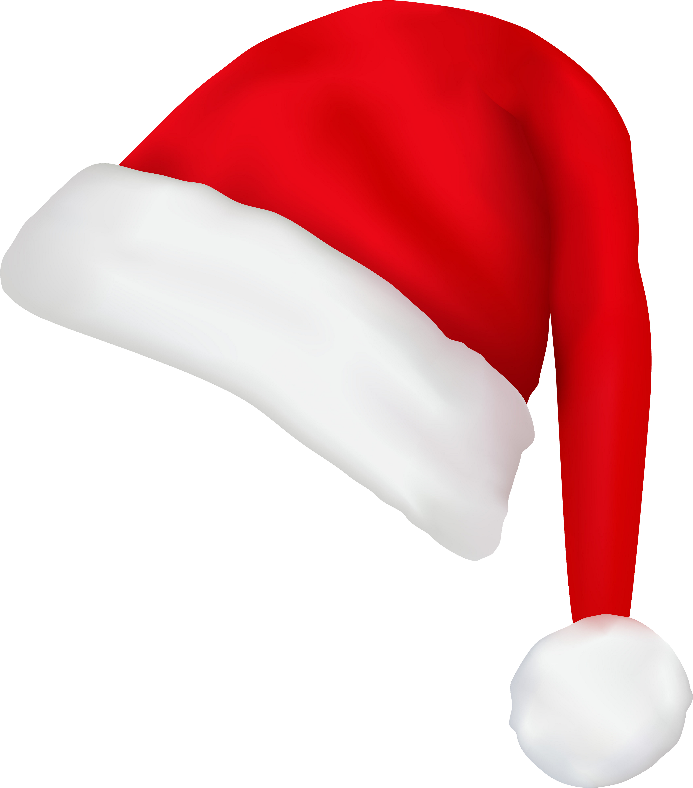

 Quadro de Rodagem
Quadro de RodagemQuadro de Rodagem mostra status de todos veículos durabilidade como: Km de teste, Motorista atual, turnos consecutivos parados, localização, eng. responsável, ordem prioridade etc.
 Schadenstisch
SchadenstischIndicador Schadenstisch consiste em mostrar a evolução dos status dos KPM's, por diferentes FG's, total kpm fechados, e responsáveis semanalmente.
 Vareta de Óleo
Vareta de ÓleoControle de Óleo na Vareta consiste em controlar e analisar o nível de óleo dos veículos e acompanhar o consumo atual com nº dos lacres dos mesmos.